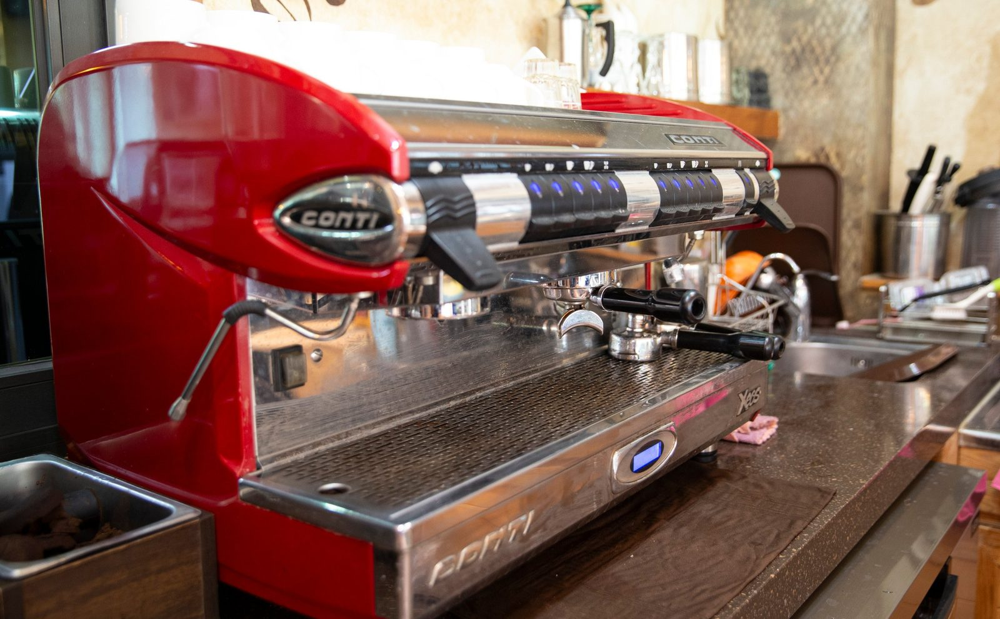

스튜디오 입구에 커피 한 잔을 두는 이유 — 김스카페
2026-10-17 발행
사진관 문을 열면 커피 냄새가 먼저 납니다. 돌벽에 흰 글씨로 Kim's cafe라고 적힌 간판이 있고, 그 아래로 들어서면 작은 카페가 있습니다. 김작가의 김스카페입니다.

왜 사진관에 커피를 두었을까, 라고 물으시는 분들이 있습니다. 이유는 아주 단순합니다. 사람은 기다리는 동안 긴장하기 때문입니다.
가족사진을 찍으러 오시는 날은 대개 마음이 바쁩니다. 옷은 제대로 챙겼는지, 아이가 투정 부리지는 않을지, 부모님이 지루해하시지는 않을지. 그 마음으로 문을 열면, 어깨에 힘이 들어가 있습니다. 그 상태로 촬영을 시작하면 표정이 굳습니다. 그래서 저는 커피 한 잔을 먼저 권합니다. 따뜻한 아메리카노 한 잔을 손에 들고 앉아 있는 동안, 어깨에서 힘이 빠집니다.
어르신들은 특히 이 자리를 좋아하십니다. 촬영이 끝나고 “고생했다”며 앉으시는 자리가 여기입니다. 커피를 드시며 창밖을 보시고, 옆에 앉은 자식과 이야기를 나누십니다. 저는 그때 멀리서 사진을 한 장 찍어 둡니다. 촬영본이 아니라, 그날의 마지막 장면으로요.


아침 일찍 오시는 가족도 있습니다. 촬영 전에 커피 한 잔으로 하루를 시작하시고, 촬영이 끝나면 아이들은 음료를 들고 마당으로 나갑니다. 그 사이 어머니는 의자에 앉아 사진을 넘겨 보십니다. 급하게 돌아갈 필요가 없는 시간입니다.

저는 이 공간을 만든 이유를 이렇게 말씀드립니다. 사진관은 사진만 찍는 곳이 아니라, 가족이 잠깐 앉아 있는 곳이어야 한다고요. 오늘 하루 가족이 모였는데, 그 시간이 서둘러 지나가면 아깝습니다. 커피 한 잔 마실 동안의 여유가 그날의 기억을 조금 더 길게 만듭니다.
그러니 오실 때 굳이 준비하실 것은 없습니다. 문을 열고 들어오셔서, 따뜻한 아메리카노 한 잔 받으시고, 천천히 둘러보세요. 사진은 그다음에 찍어도 늦지 않습니다.
칠순·팔순을 맞으신 부모님과 함께 오시는 날이라면, 도착하셔서 이 자리에 먼저 앉아 보시길 권합니다. 오늘 어떤 사진을 찍고 싶은지, 그 이야기를 커피와 함께 나누다 보면 촬영이 훨씬 편안해집니다.
자주 묻는 질문
Q. 창원에서 칠순 가족사진은 언제 예약하는 게 좋을까요?
A. 생신 날짜가 정해지면 한두 달 전에 미리 말씀해 주시는 것이 좋습니다. 부모님이 편한 시간대와 옷 준비까지 함께 맞출 수 있습니다.
Q. 부모님이 사진 찍는 것을 어색해하시는데 괜찮을까요?
A. 괜찮습니다. 촬영 전 김스카페에서 따뜻한 아메리카노 한 잔으로 긴장을 푸시고, 준비가 되면 천천히 시작합니다.
Q. 멀리서 가는데 하루에 다 할 수 있을까요?
A. 의령점은 1,000평 부지에 독채 펜션을 함께 운영하고 있어, 오시는 길이 먼 가족은 하루를 여유 있게 쓰실 수 있습니다.

오시는 곳
사랑이야기창원점
- 주소 경남 창원시 성산구 원이대로 652, 상남동 롯데빌딩 2층
- 전화 055-287-8022
- 영업시간 오전 10:00 ~ 오후 7:00
- 예약 전화 상담 · 카카오톡 채널
- 주차 건물 지하 주차장
김작가사진이야기 의령
- 주소 경남 의령군 궁류면 청정로 1188
- 전화 055-574-3706
- 영업시간 오전 10:00 ~ 오후 7:00
- 예약 전화 상담 · 카카오톡 채널
- 주차 전용 주차장
이 글에 한마디
댓글창을 준비하고 있습니다. 그동안 궁금한 점은 카카오채널로 남겨 주시면 바로 답변드립니다.
카카오채널로 한마디 남기기